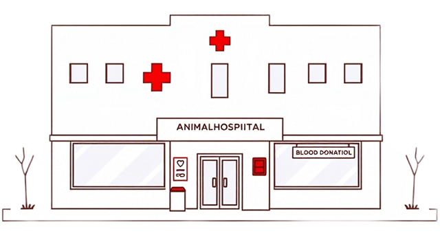
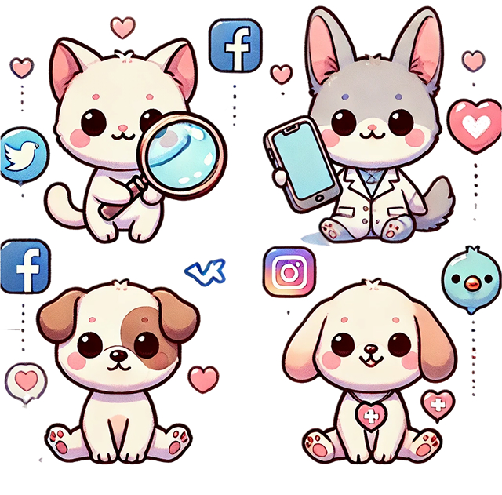

Как мы ищем донорскую кровь для вашего питомца
Поиск донорской крови: как это работает?
Когда вашему питомцу требуется переливание крови, каждая минута имеет значение. Мы делаем всё возможное, чтобы найти подходящего донора как можно быстрее. Вот как мы организуем поиск донорской крови:
Ветеринарные клиники и больницы
Мы сотрудничаем с ведущими ветеринарными клиниками и больницами, где ведется учет доноров животных. Это позволяет нам оперативно проверить наличие необходимой группы крови и организовать ее получение.
Что мы делаем:
- Проверяем базы данных клиник на наличие подходящих доноров.
- Предоставляем вам контактную информацию выбранной клиники или больницы.
- Помогаем связаться с ними напрямую или берем организацию связи на себя.
Ваше участие:
- Вы можете связаться с клиникой напрямую, чтобы уточнить наличие крови и условия получения.
- Мы всегда готовы помочь вам с ответами на вопросы или организацией процесса.

Социальные сети: быстрое распространение информации
Социальные сети — это мощный инструмент, который помогает нам быстро находить доноров среди владельцев животных. Мы публикуем объявления в популярных сообществах и группах для владельцев питомцев.
Где мы размещаем информацию:
- Telegram-каналы и чаты для владельцев животных.
- Группы ВКонтакте и сообщества Instagram.
- Специализированные форумы о животных.
Что мы делаем:
- Размещаем объявления с подробным описанием ситуации и требованиями к донору.
- Предоставляем контактную информацию владельцев доноров, чтобы вы могли связаться с ними напрямую.
- Помогаем координировать процесс и отвечаем на ваши вопросы.
Ваше участие:
- Вы можете связаться с владельцем донора напрямую, чтобы уточнить детали.
- Мы всегда на связи, если вам нужна помощь в организации встречи или согласовании условий.

Если у вас есть вопросы или вам нужна помощь, вы можете связаться с нами любым удобным способом: